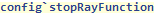
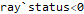
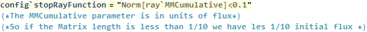
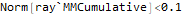
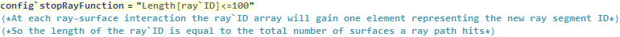
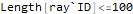
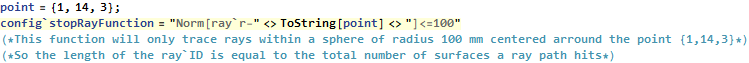
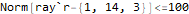
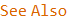

| CONFIG` SYMBOL |
config`stopRayFunction
| config`stopRayFunction A user modifiable configuration parameter of Polaris-M. It allows the user to input an evaluation function to decide if a ray should be terminated. Its value can be set to a function of any parameter from the ray` context which evaluates to a Boolean result. |

Data Type: String (Conditional statement in quotes)
Default Value: “ray`status<0”

 Basic Examples (4)
Basic Examples (4)
View the default value



Create A function that will only trace rays with a flux >0.1 (input flux is 1, so this function will stop rays with 10% or less of the initial ray flux)



Trace up to 100 ray-surface interactions



Only trace rays in a given spatial domain




 •
•  • • •
• • •  •
•  •
•  •
•  •
•  •
•  •
•  •
•  •
•  •
•  •
•  • •
• •  •
•  •
•  •
•